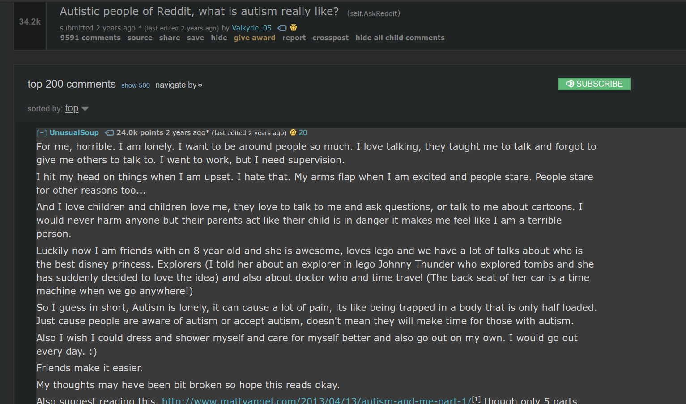
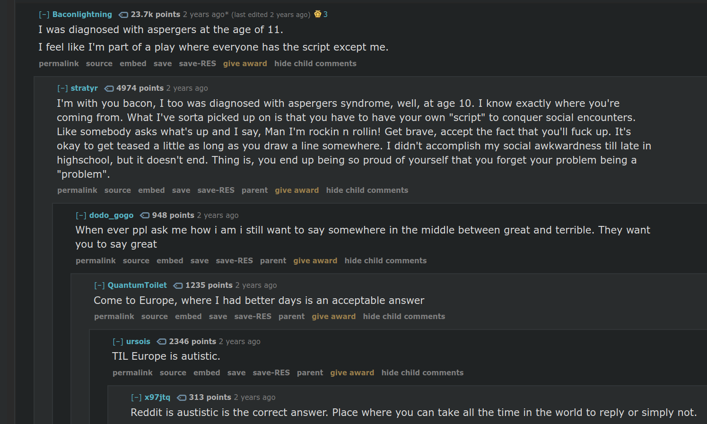
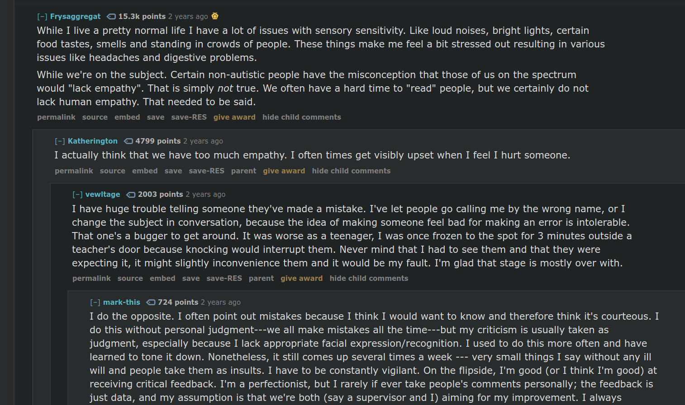

/r/AskReddit on what it's like on the spectrum.
reddit.com/r/AskReddit/comments/5q9ppf/autistic_people_of_reddit_what_is_autism_really/
Reddit has become a very popular website for people to connect with each other and discuss different topics in the world. As a high school student, websites like Reddit are becoming very prominent in everyday life due to the easy communication and layout. The current thread is an archived one that allows people with autism in the Reddit community to share with each other their thoughts and comment on each others stories. It can be a powerful bonding place where social interactions can be practiced and all questions can be answered.



Critique of the source
Strengths
- Community-oriented forum for open discussion
- Creates a bond with others who have the same disabilities
- Easy access and navigation
- Real life stories and experiences
Weaknesses
- Unfiltered forum where you can find just as many negative experiences as positive
- No formality to the discussion of the disability
- Unverifiable accounts of having ASD